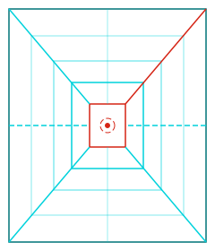
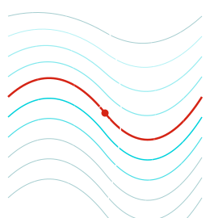

PROTOCOLO 01EXPLORÁ≫CONECTÁ≫EVALUÁ
ESTUDIANTES Y EGRESADOS DE SOFTWARE // ITU UNCUYO
[ UN PLAN. MUCHOS CAMINOS. // 2026 ]
DOMINÁ TUTRAYECTORIA.
La carrera conectada con el trabajo en tecnología.
Recorré las materias como nodos, descubrí qué conocimientos aporta cada programa y explorá los perfiles laborales que se relacionan con el plan. Cada porcentaje es una estimación curricular explicada, no una promesa de empleo.
CARGA HORARIA2.104 H
PLAN DE 6 SEMESTRES
MALLA CURRICULAR33 REGISTROS
32 ESPACIOS POR TRAYECTORIA
PERFILES ESTUDIADOS250 ROLES
79 FUENTES CONSULTADAS
ITU_ATLAS // MAPA DE RELACIONESDATOS VERIFICADOS
3 MATERIAS DE MUESTRA

VISTA CONCEPTUAL // SIN CORRELATIVIDADES INFERIDASPLAN ITU · UNCUYO DESARROLLO DE SOFTWARE
01 // CONEXIONES[NODE_SYSTEM]
UNA MATERIA, VARIOS CAMINOS
Seleccioná un nodo para ver qué parte del programa aporta a distintos perfiles, con su aplicación concreta y sus límites.
ENTRAR AL MAPA ↗02 // TRAYECTORIA[SEM_01—06]
SEIS SEMESTRES VISIBLES
Explorá el orden de cursado y los tramos anuales. La línea temporal muestra el plan; no inventa correlatividades.
VER EL RECORRIDO ↗
03 // EVIDENCIA[LABOR_AUDIT]
PORCENTAJES EXPLICADOS
Revisá 250 perfiles, las materias asociadas, las brechas para incorporarte y las fuentes detrás de cada estimación.
EXPLORAR PERFILES ↗